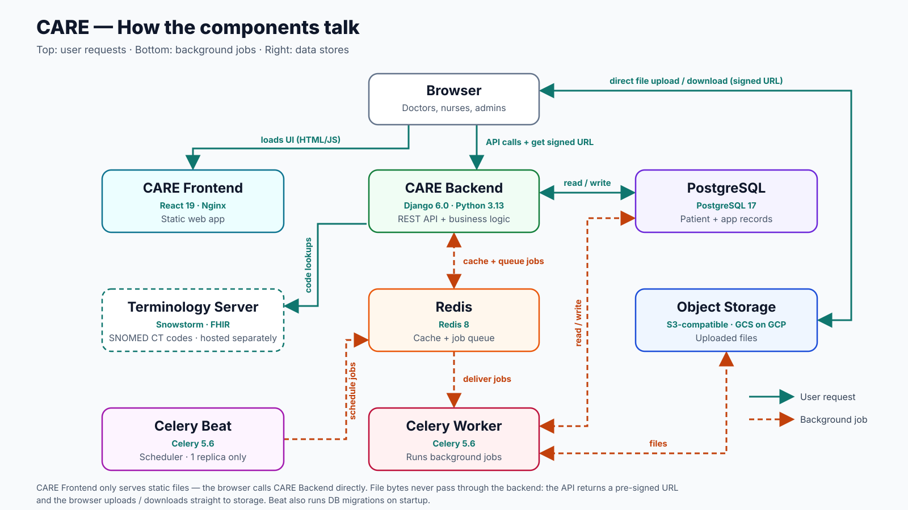

CARE Fundamentals Webinar Series · Session 3

Browser loads the React bundle from Nginx, then calls the Django API. For files, the API returns a pre-signed URL and the browser uploads/downloads directly to object storage — file bytes never pass through the backend. Celery workers read/write storage directly. Beat is the single scheduler.
| Component | Technology | What it does |
|---|---|---|
| Frontend | React 19 | The web app users see |
| Backend API | Django 6.0 (Python 3.13) | Handles all requests and business logic |
| Celery Worker | Celery 5.6 | Runs background jobs |
| Celery Beat | Celery 5.6 | Schedules recurring jobs (only one runs) |
| PostgreSQL | PostgreSQL 17 | Stores patient and app data |
| Redis | Redis 8 | Cache and job queue |
| Object storage | Any S3-compatible storage (GCS on GCP) | Stores uploaded files |
gcp_templatepre-infra/ — APIs, optional DNS zoneKMS/ — key ring & keysinfra/ — VPC, GKE, Cloud SQL, GCS, Cloud Armor, GitHub WIFdeploy/ — namespace, secrets, Helm releasestfvars live in Secret Manager as tofu-tfvars-<env>; never in git.
| care_be | Backend API, Celery worker, Celery Beat (+ HPAs) |
| care_fe | Frontend (Nginx serving the React app) |
| redis | Redis 8 — cache and job queue |
| gateway | Gateway API load balancer, HTTPS, Let's Encrypt certificate |
| cert-manager | Issues and renews TLS certificates (upstream Jetstack chart) |
| metabase | Metabase analytics dashboards |
| care_metrics_exporter | Exports Celery queue depth to Prometheus |
| dcm4chee | DICOM server + OHIF viewer (only if enable_dicom) |
React SPA on Nginx. Required.
API + Worker + Beat from one image. Required.
Primary DB (+ read replica on GCP). Required.
Broker/cache and file store. Required.
Analytics dashboards, own metadata DB. Optional.
Delivered as backend plugs (care_scribe, ambient_scribe) calling an external model API. Optional.
dcm4chee + OHIF viewer, enabled with enable_dicom. Optional.
Installed at build via ADDITIONAL_PLUGS (ABDM, radiology, payments…). Optional.
| Component | Chart request | Chart limit | Observed in live instances |
|---|---|---|---|
| Backend API (per pod) | 500m CPU / 1 Gi | 1.5 CPU / 2 Gi | 20–150m CPU · 490–670 Mi |
| Celery Worker (per pod) | 500m / 512 Mi | 1.5 CPU / 2 Gi | 3–46m · 220–300 Mi |
| Celery Beat | 150m / 250 Mi | 250m / 2 Gi | 0–4m · 170–260 Mi |
| Frontend (per pod) | 100m / 128 Mi | 200m / 256 Mi | 1m · 3–40 Mi |
| Redis | 100m / 128 Mi | 500m / 256 Mi | 4–12m · 7–23 Mi |
| Metabase | 500m / 512 Mi | 1 CPU / 1 Gi | 17–25m · ~1.3–1.4 Gi |
| PostgreSQL | Cloud SQL db-custom-2-3840 (2 vCPU / 3.75 GB), 10–15 GB SSD | Same tier on every instance | |
Observed: kubectl top snapshot across 4 production instances + staging, Sep 2026. Metabase runs above its chart memory request — plan ~1.5 Gi for it.
| Instance | GKE nodes | API pods | Workers | Cloud SQL | Node usage |
|---|---|---|---|---|---|
| Staging | 3 × e2-standard-2 | 2 | 1 | 2 vCPU / 3.75 GB + 1-vCPU replica | 7–17% CPU · 39–62% RAM |
| Instance A | 3 × e2-standard-2 | 2 | 1 | 2 vCPU / 3.75 GB + replica | 10–12% CPU · 41–59% RAM |
| Instance B | 5 × e2-standard-2 | 4 | 2 | 2 vCPU / 3.75 GB + replica | 8–10% CPU · 39–56% RAM |
| Instance C (+DICOM) | 4 × e2-standard-2 | 4 | 2 | 2 vCPU / 3.75 GB + replica | 7–21% CPU · 40–64% RAM |
| Instance D | 4 × e2-standard-2 | 4 | 2 (HPA 2–8) | 2 vCPU / 3.75 GB + replica | 5–13% CPU · 31–63% RAM |
1–2 nodes
Recreate strategy3–4 nodes
5+ nodes
REGIONAL HAGrow on signals, not facility count alone: API CPU, Celery queue depth, DB CPU/connections, node memory.
api_autoscaling_min/max_replicas in helm_configstabilizationWindowSeconds: 900)tofu-tfvars-<env>)| Line item | Typical config | Est. USD / month |
|---|---|---|
| GKE nodes | 3–5 × e2-standard-2 (asia-south1) | ~$175 – $295 |
| Cloud SQL primary | db-custom-2-3840, zonal, SSD | ~$95 |
| Cloud SQL read replica | db-custom-1-3840 | ~$60 |
| Metabase metadata DB | db-f1-micro | ~$10 |
| Load balancer, NAT, static IP | Regional external ALB + Cloud NAT | ~$50 – $70 |
| Storage, logs, backups, egress | Depends on usage | ~$20 – $60 |
| Total per instance | Staging ≈ low end · large ≈ high end | ~$400 – $600 |
Estimate from Google list prices × the resources actually provisioned (slide 8). Not a billing export — confirm with the GCP pricing calculator / billing reports for your project. GKE zonal cluster fee is covered by the per-billing-account free tier.
develop ref of care / care_feenv/<name>/: deploy_config.json, care.env, care_fe.envlatest-<run> in Artifact RegistryAll main changes land on staging first every week.
Prod gets the exact commits verified on staging — no hand edits, no drift.
The production deploy option fans out to every env with TF_VAR_env_name = production. Deploys are serialized per env.
metabase/metabase:v0.63.13, port 3000, health /api/healthdb-f1-micro)3 small nodes + a 2-vCPU Postgres runs a real state HMIS today. Use HPA for API and workers, promote staging → production by commit, and add Metabase only when you need analytics.